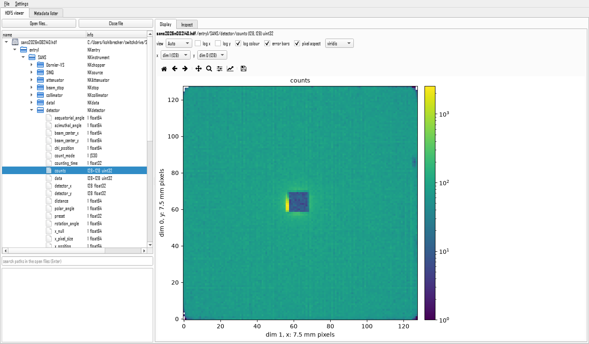
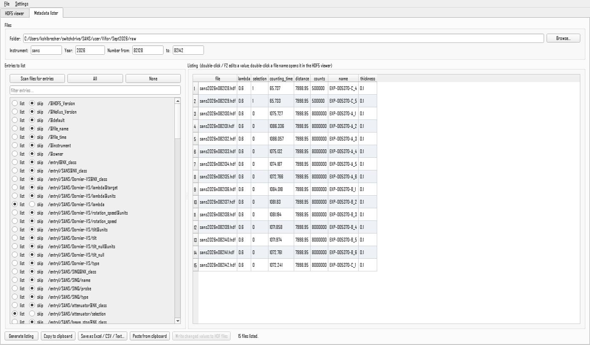

Using pyTOOLbox
HDF5 viewer

Opening files: Open files… (several at once), File → Open HDF5 files…, drag and drop onto the viewer, or the file names on the command line. Every file is a top-level item of the tree; Close file removes the file of the selected item. Files are opened only while they are read, so the instrument software or the metadata lister can write to a file that is shown.
Tree: groups, datasets, soft links (→ target) and external links; broken links are marked. Groups are read
when they are expanded. The second column gives the shape and type of a dataset, or the NX_class of a group.
Search: the field below the tree searches the paths of all open files (case-insensitive substring); clicking a hit selects that object in the tree.
Display shows the selected object; view chooses how:
view |
for |
|---|---|
Auto |
scalars, strings and one-element datasets as text; 1D numeric data as a line; 2D and higher as a heatmap; other data (compound, string arrays) as a matrix |
Line |
1D data, or one dimension of an N-dimensional dataset (chosen as x; the other dimensions are fixed by the index spin boxes) |
Heatmap |
two dimensions (x, y) of an N-dimensional dataset, the others fixed by index |
Matrix |
the values as a table (row and column headers give the index) |
Text |
the value as text; for a group, the list of its members |
Options: log x, log y, log colour, error bars (NeXus plots), the colour map, and pixel aspect: a
detector image is drawn with the true aspect ratio of its pixels, taken from x_pixel_size and y_pixel_size
(with their units) of the dataset’s NXdetector group, also when the image is shown through a link (such as
data1/counts of SANS-I). x_pixel_size belongs to the last dimension, y_pixel_size to the one before; the
axis labels give the pixel size. Images are drawn flush left with the colour bar attached.
NeXus default plots: a group with @signal (NXdata, NXcanSAS SASdata), or a file / entry whose
@default leads to one, is plotted with its axes (@axes) and error bars (@uncertainties or
<signal>_errors). A reduced NXcanSAS file of pySASred therefore shows I(Q) with Idev when its root is selected.
Very large datasets are read with a stride (every n-th element along each shown dimension, as the axis label says) so that a plot never reads more than Preferences → pyTOOLbox → largest number of elements read for a plot (4 million).
→ 2D data hands the 2D dataset shown (detector counts of a raw file, a reduced image) to the tab 2D data: there the beam centre is set by a click or by coordinates (or the centre of gravity), and radial, sector or azimuthal averages and the polar view ψ – q follow (2D data). SANS-I raw files come with their geometry (pixel size, distance, wavelength); for other data the pixel size of the viewer is used.
Inspect lists the object (path, type, shape, number of elements, storage size, chunks, compression filters, maximum shape, fill value) and all its attributes with their types.
Metadata lister

Files: folder, instrument prefix (
sans), year and run-number range select the files<instrument><year>n<number>.hdf.Scan files for entries collects every attribute and every small dataset (at most 16 elements; larger ones are images or histograms) of the selected files. Keys are
/group/datasetand/group@attribute.Choose list or skip for each entry (the filter field and All / None act on the visible entries).
Generate listing: one row per file, one column per entry; column titles are the last path component (parents are added when names repeat).
Copy to clipboard (tab separated, for a spreadsheet; Ctrl+C copies the selected rows), Save as Excel / CSV / Text… (Excel needs
openpyxl).
Correcting values: double-click (or F2) edits a value; numbers keep their type. Paste from clipboard
(Ctrl+V) pastes a column or block from a spreadsheet, starting at the current cell. Edited cells are yellow and
are written only with Write changed values to HDF files: before a value is changed, its original is kept as a
new entry old_<name> next to it (an existing old_<name> is never overwritten), and a backup copy
<file>.hdf.bak can be made. A text longer than a fixed-length string dataset allows is stored as a new, longer
dataset under the same name with the same attributes. Closing the window (or the launcher) with edited values
that are not written asks first.
Floating-point values are shown rounded to 3 digits after the decimal point; this and the largest dataset counted
as metadata are in Preferences → pyTOOLbox. The folder, the range and the list / skip choice of every entry are
kept in toolbox_meta_lister.json next to the pySASfit preferences file (the file ~/.hdf_meta_lister.json of the
old stand-alone script is read once if present).
From Python
from pysasfit.toolbox import hdf5
hdf5.children("sans2026n082140.hdf", "/entry1/SANS/detector") # members with kind and shape
meta, attrs = hdf5.describe("sans2026n082140.hdf", "/entry1/SANS/detector/counts")
img, stride = hdf5.read_slice("sans2026n082140.hdf", "/entry1/SANS/detector/counts", x_dim=1, y_dim=0)
hdf5.pixel_size("sans2026n082140.hdf", "/entry1/SANS/detector/counts") # (0.0075, 0.0075) m
from pysasfit.toolbox.meta_lister import collect_entries, write_values
collect_entries("sans2026n082140.hdf")["/entry1/sample/thickness"] # 0.1
write_values("sans2026n082140.hdf", {"/entry1/sample/thickness": 0.2}) # keeps old_thickness